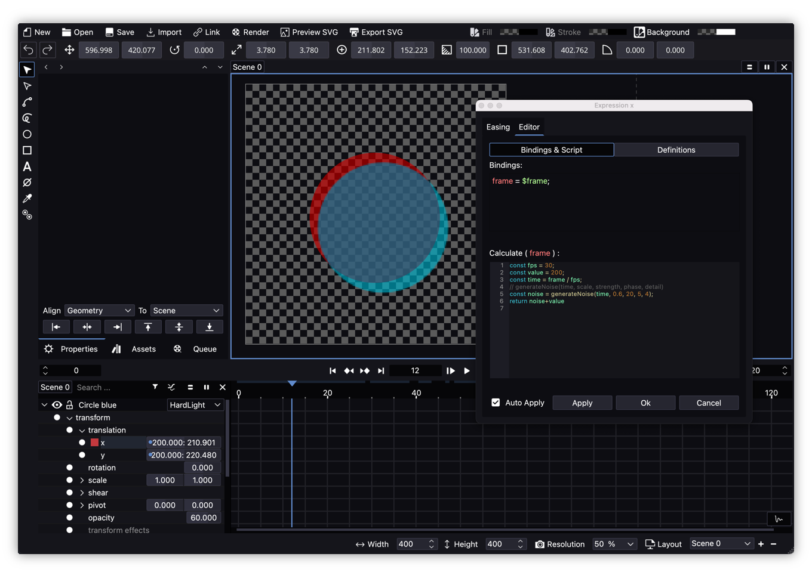

Expressions
Expressions in Friction allow users to create dynamic animations by using code to control object properties. Instead of relying on manual keyframes, the user can use expressions to automate behaviors, connect parameters, and add randomness or complexity.
Expressions are written in ECMAScript. Each property in Friction has an optional expression field where you can input code that dynamically calculates the property’s value for each frame.

In order to create an expression, the user should select a single parameter in the Timeline panel or in the Properties one, click on the secondary button and select “Set Expression”.
The Expressions popup window has 2 tabs:
- Editor: where the Expressions are setup.
- Easing: a simple way to create an easing animation for a parameter.

Bindings
In this section the user can create variables of properties with values coming from the scene:
$value: the numeric value the property has, that is, the constant number or actual value driven by keyframes.$frame: the actual frame value. Afterwards this value could be divided by the scene FPS to turn it into a time value.property: by writing a hierarchy separed by dots.it is possible to get any property value from the scene. If it is referred to the object where the Expression is being written there is no need to start by writing the name of the object.
Some examples:
value = $value;
frame = $frame;
position_x = transform.translation.x;
position_y = transform.translation.y;
opacity = transform.opacity;
Note that it’s not possible to add here constant variables like lenght = 100;. That must be done in the Calculate section.
Friction is not capable yet to get a value coming from another time or frame as in other famous software.
Calculate
In this section the user is able to define constants, do calculations, use ECMAScript (JavaScript) functions.
Example:
width = 100;
final_value = width / 2;
return final_value;
For convenience, it is possible to write custom funtions that are stored in the “Definitions” tab.
Note that this section must always finish with a return line where it is defined the final value that gets the Expression.
Example:
return position_x * 2;
Definitions
When the user wants to add complex or long custom functions, they can be included here and called later in the Calculate section.

A simple example of use would be adding this function in the Definitions panel:
function my_simple_function (value1, value2) {
return value1 + value2;
}
And then in the Calculate one:
one = 100;
two = 200;
return my_simple_function(one, two);
Expressions Presets
Writing lot of pieces of code and moreover, doing it for a few different parameters could be tedious and slowdown workflows so Friction let users save their code and functions inside a bundle called Preset for easy later use or to be shared with other animators.

Presets can be managed with the following fields and commmands:
- selector: in this dropdown it is possible to load a presaved
Presetand automatically fill theBindings,Scripts(so calledCalculate) andDefinitions. - save: it prompts for a preset name and adds it to the selector.
- delete: it deletes the active preset from the selector. It asks the users if he is sure about it.
- update: it updates both the name and code of active preset. The name can be updated by editing it in the selector field.
- export: presets can be saved as external files with
.fexprextension so that they can be backed up or shared. - import: it lets import a preset from an external
.fexprfile.
.fexpr are text based files so they can be viewed, edited and/or created with any text editor. At Friction startup the presets placed into the following folder will be loaded:
- Linux:
home_directory/.config/friction/Expressions - Windows:
home_directly\AppData\Local\friction\Expressions - macOS:
home_directory/Library/Preferences/friction/Expressions/
Note that if creating them by hand, there must not be presets with the same field id. Apart from that, if the preset structure is preserved the .fexpr will be loaded at startup.
Custom Functions
Friction comes with lots of functions provided from ECMAScript basics but users may find some missing or they would just like to create their own ones and make them available across any Expression editor.
For this to work users should open their /Expressions/ folder where normal Expressions Presets are saved, that is:
- Linux:
home_directory/.config/friction/Expressions - Windows:
home_directly\AppData\Local\friction\Expressions - macOS:
home_directory/Library/Preferences/friction/Expressions/
Open, duplicate or edit the one you want to turn into a Function with any text editor and make sure it has an structure like the following:
[General]
definitions=
description=
highlighters=
id=
title=
version=
The most important parameters to fill up are definitions= where the custom function has to be included, highlighters= that will make it recognizable by Friction and id= where any string could be added while it doesn’t contain blank spaces.
A full working example:
[General]
definitions="function clamp(number, lower, upper) { return Math.max(lower, Math.min(number, upper)); }"
categories=Core
description=Clamp value to upper and lower.
highlighters="clamp(x, lower, upper)"
id=graphics.friction.clamp
title=Clamp
version=1
Save the file with any name and extension fexpr and reboot Friction as Presets and custom functions are loaded at startup.
Take into account that the previous file structure is very similar to the one used for Presets but here it lacks of some of the parameters.
If adding the functions with the normal Expression editor into Definitions files and saving them as Presets they will just work within that Preset and won’t be available for other parameter Expressions. It can be created within Friction if desired but later it must be edited with a text editor so that it matches the “custom functions” structure.
Tips and tricks
Auto Applycheckbox can be marked to let expressions to be live updated- the Expressions Editor window will stay open and on top in case it is needed to preview or change any other parameter in Friction GUI. That is, it is possible to continue editing and animating and keeping the Expressions editor open.
- in
Bindingsnot just “one value” parameters can be called, so if wanting to save into a variable a “two value” parameter just refer to that “group” of two values:
// single value
var x = transform.translate.x;
// double value
var translate = transform.translate;
Useful expressions
Following up there is a list of commonly used expressions so that new users can test and learn:
Clamp
Bindings:
value = $value;
Calculate:
return clamp (value, 0, 100);
Definitions:
function clamp (num, lower, upper) {
return Math.min(Math.max(num, lower), upper);
}
Simple Wiggle (random)
Bindings:
value = $value;
frame = $frame;
Calculate:
return smoothWiggleX(2, 20, frame, value)
Definitions:
function smoothWiggleY(frequency, amplitude, time, start) {
var offsetY = Math.cos(time * frequency * 1.3) * amplitude + start;
return offsetY
}
function smoothWiggleX(frequency, amplitude, time, start) {
var offsetX = Math.sin(time * frequency) * amplitude + start;
return offsetX
}
Wiggle
Ported from Blender’s noise modifier:
Bindings:
frame = $frame;
Calculate:
const fps = 30;
const value = 200;
const time = frame / fps;
// generateNoise(time, scale, strength, phase, detail)
const noise = generateNoise(time, 0.6, 20, 5, 4);
return noise+value
Definitions:
function generateNoise(t, scale = 1, strength = 1, phase = 0, detail = 1) {
// Fixed permutation for consistency
const permutation = Array.from({ length: 256 }, (_, i) => i).concat(Array.from({ length: 256 }, (_, i) => i));
function fade(t) {
return t * t * t * (t * (t * 6 - 15) + 10);
}
function lerp(a, b, t) {
return a + t * (b - a);
}
function grad(hash, x) {
const h = hash & 15;
const gradient = 1 + (h & 7); // Gradient range between 1 and 8
return (h & 8 ? -gradient : gradient) * x;
}
function perlinNoise(x) {
const X = Math.floor(x) & 255;
x -= Math.floor(x);
const u = fade(x);
const a = permutation[X];
const b = permutation[X + 1];
return lerp(grad(a, x), grad(b, x - 1), u);
}
let amplitude = strength;
let frequency = scale;
let total = 0;
for (let i = 0; i < detail; i++) {
total += perlinNoise((t + phase) * frequency) * amplitude;
frequency *= 2; // Double frequency for each octave
amplitude /= 2; // Halve amplitude for each octave
}
return total;
}
Loop
Bindings:
frame = $frame;
Calculate:
loopDuration = 60;
startValue = 0;
finalValue = 1;
return startValue + ((frame % loopDuration) / loopDuration) * (finalValue - startValue)
Orbit
For a easier control of this expression, some custom properties are created but it could be modified to don’t use them and just add the values in the Calculate section:
Custom properties
- centerX (pixels)
- centerY (pixels)
- radius (pixels)
- speed (frames)
- direction (1 clockwise, -1 counter clockwise)
- offset (degrees)
Bindings:
centerX = properties.centerX;
centerY = properties.centerY;
radius = properties.radius;
speed = properties.speed;
direction = properties.direction;
offset = properties.offset;
frame = $frame;
Calculate (for translate X parameter):
var offset = offset * (Math.PI / 180);
var centerOfComp = [centerX, centerY];
var circleOverTime = [ Math.sin( (frame/speed) * 2 * Math.PI * direction + offset ) * radius, -Math.cos( (frame/speed)* 2 * Math.PI * direction + offset ) * radius ];
return centerOfComp[0] + circleOverTime[0];
Calculate (for translate Y parameter):
var offset = offset * (Math.PI / 180);
var centerOfComp = [centerX, centerY];
var circleOverTime = [ Math.sin( (frame/speed) * 2 * Math.PI * direction + offset ) * radius, -Math.cos( (frame/speed) * 2 * Math.PI * direction + offset ) * radius ];
return centerOfComp[1] + circleOverTime[1];